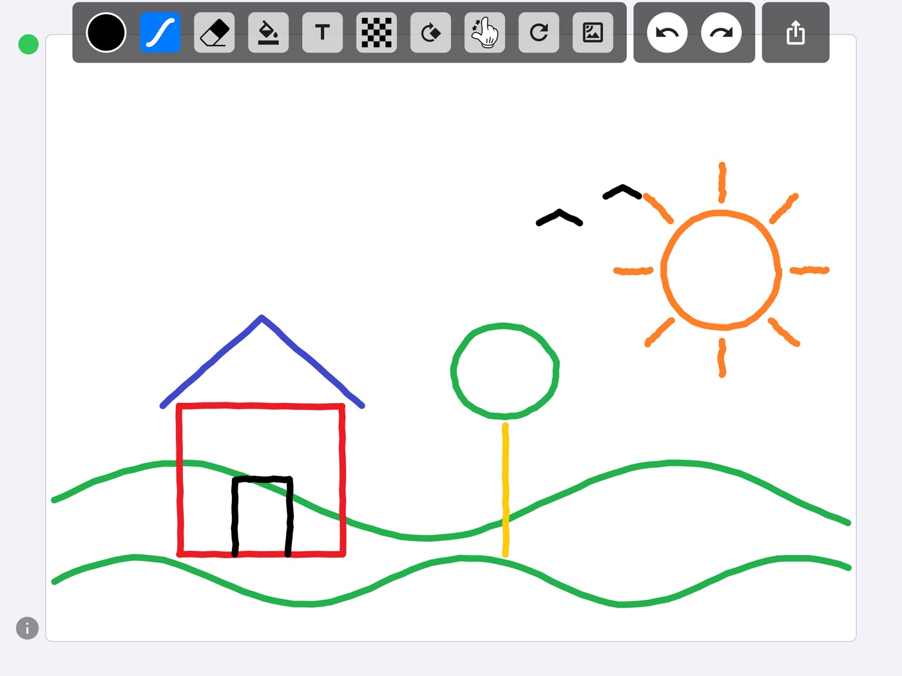
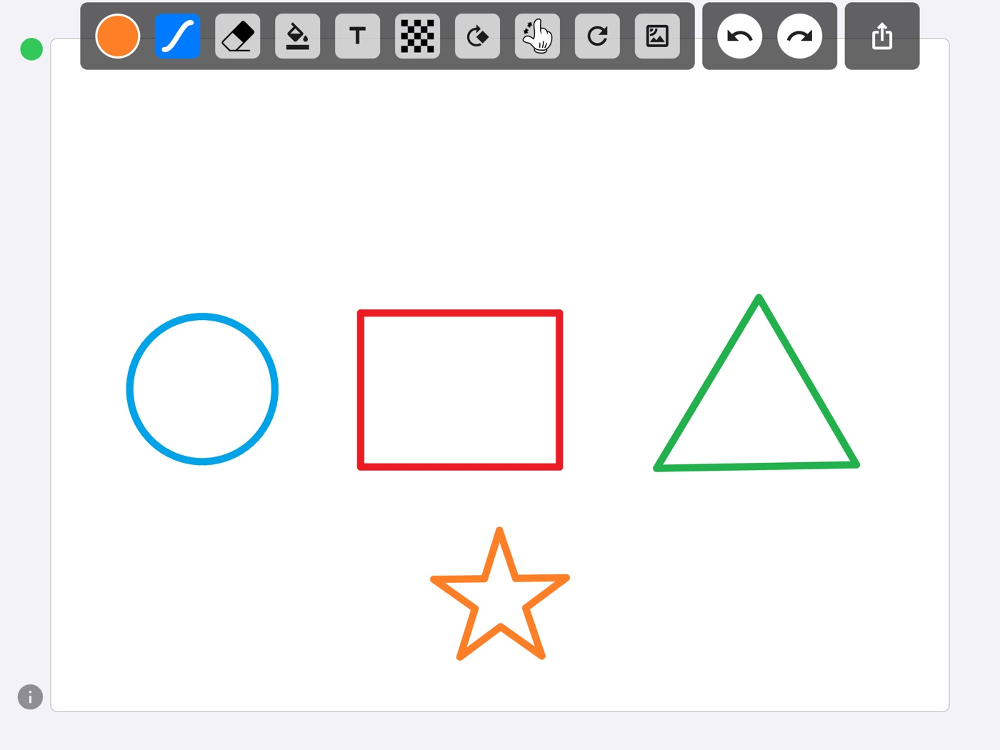
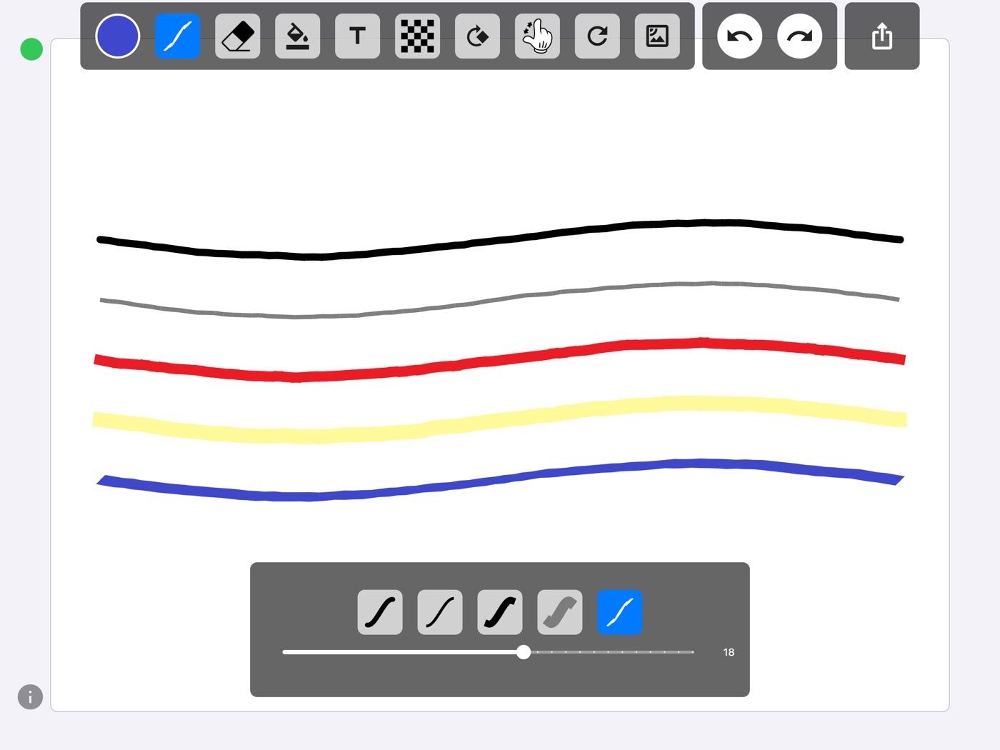

Five pen tips
Round, pencil, flat, highlighter and calligraphy. The highlighter builds up where strokes cross. The calligraphy nib thickens and thins with the direction you move. Each tip remembers its own width.
Five pen tips that actually feel different, pressure from your Apple Pencil or S Pen, and a palm you can rest on the screen. Draw a shape roughly and it comes out straight.

The idea
It isn't one. It knows how hard you are pressing, it knows a hand is resting beside it, and it is held at an angle. PaintBoardPro was built around those three facts, and everything below follows from them.
What's in it
Round, pencil, flat, highlighter and calligraphy. The highlighter builds up where strokes cross. The calligraphy nib thickens and thins with the direction you move. Each tip remembers its own width.
Press harder for a thicker line. While the pen is down, touches from your hand are ignored — so you can lean on the screen the way you lean on paper.
Draw a line, circle, ellipse, rectangle, triangle or star and hold still for a moment. It squares up at the angle you drew it, and one undo brings the hand-drawn original back.
Tap inside any enclosed outline and it fills. The fill is fixed into the drawing, so you can draw over it and erase it like everything else.
Six bundled Korean typefaces plus the system font. Drag to move, pinch to resize, twist to rotate. Text lives in the drawing, so the eraser reaches it.
A full picker with grid, spectrum and slider modes, and a hex field. Ink, page and text colours are set independently.

Where it came from
The first version shipped on the App Store in 2021, written in Swift. It was the app I wanted when a tablet and a pen were sitting in front of me and everything available treated the pen as a blunt finger.
This year I rewrote it from nothing in Flutter so Android tablets could have it as well. Two things came out of the rewrite that the original never had: real pressure with palm rejection, and shape recognition — neither of which is a feature you notice, which is the point.
It is still one canvas. There are still no layers. The pen is still the whole interface.
There's also PaintBoard on both stores — a separate, simpler app with a fixed eighteen-colour palette and four tools, not a free tier of this one. If you draw with a finger and want fewer decisions, that is the one to get.
Privacy
There is no server to upload them to, and no account to attach them to. Everything is handled on the device and is gone when you delete the app. The app is free and carries ads, which means Google AdMob and Firebase Analytics collect the usual advertising identifier and device information — all of it written out in the privacy policy.
Free on the App Store, with the Android release on the way. It works offline — the network is only ever used for ads.
